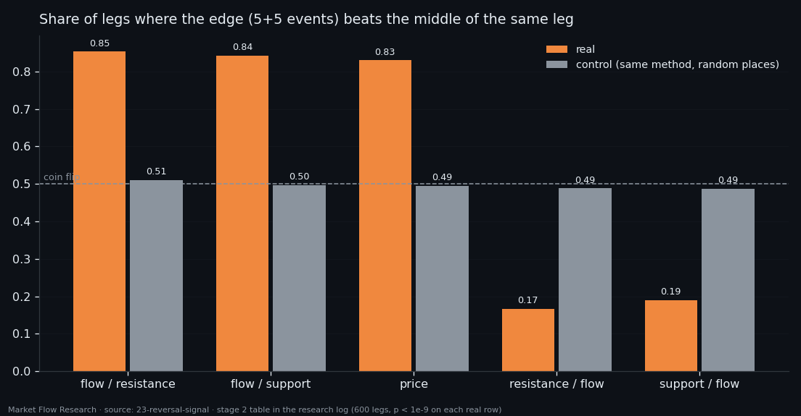
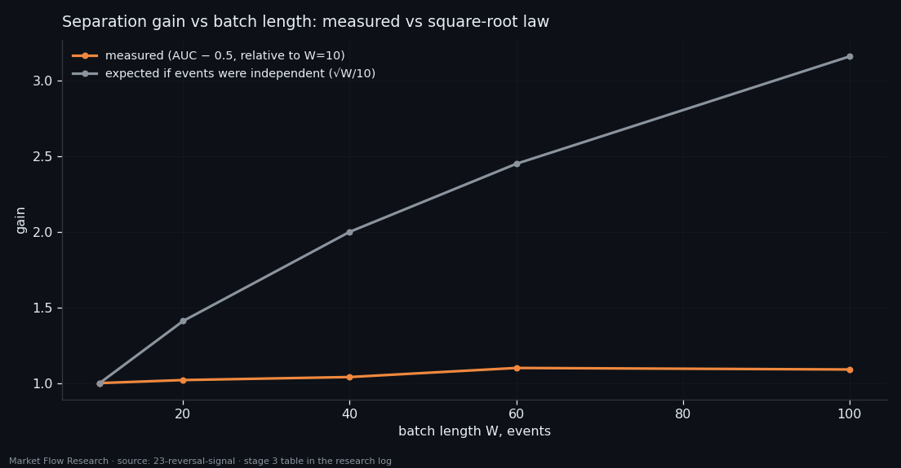
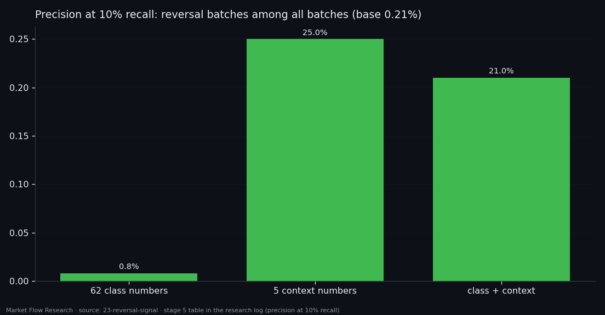
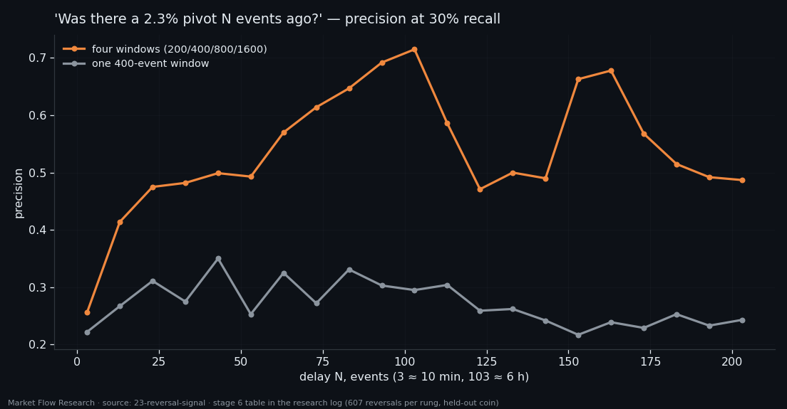

A Reversal Is a Place in the Move, Not a Shape in the Book — Five Causal Numbers Beat 62
In shortThe edge of a leg really is different from its middle — in 85% of 600 legs, by a factor of about 3.8, with a coin-flip control at 0.51. Yet no single 10-event batch can be picked out of the whole dataset by its book numbers. Five tests later the reason is clear: what identifies a reversal is where you are in the move, not what the book looks like. Five causal numbers about recent extremes lift the hit rate 121-fold over the base; the 62 numbers of the class manage 3.8-fold and add nothing on top. Asked again every ten events with four look-back windows, "was that a pivot?" climbs from 26% after ten minutes to 71% after six hours.
① The difference is real — inside each leg
Study 21 showed that on average over hundreds of legs the edge of a leg looks different from its middle. Study 22 showed that a single 10-event batch has no signature of its own. Both are true at once, and this study tries five ways to get the average difference out of the noise.
A local rank instead of a pooled baseline — normalising each batch against its own neighbourhood to remove volatility regimes — did nothing: AUC 0.755 on a 1,000-event window against 0.744 pooled, and lower precision. Volatility is not why separation is weak.
A pair inside one leg is where the effect shows plainly. Compare the five events at each end of a leg with the middle of that same leg: flow ratios are stronger at the edge in 85.3% of 600 legs (median ×3.77), price moves in 83%, and book-per-flow ratios are weaker in 81–83%. The same method on random places gives 0.487–0.510. The end of a leg is slightly more distinct than its start here (0.78 vs 0.74), and edge width barely matters: 3 to 20 events all give 0.84–0.85.
The pooled test asks "is this batch strong at all?" — and the dataset is full of strong batches. The in-leg test asks "is it stronger than the middle of its own leg?" Only the second matches what the leg profile shows.

② Longer batches help — four times slower than they should
Averaging more events should shrink noise. It does, a little: the best AUC rises from 0.744 at 10 events to 0.767 at 60 (2.3–3.5 hours), and precision at 10% recall from ×4.3 to ×10.3 the base rate. But the gain is 1.10 where independent noise would give 2.45: neighbouring events are correlated, so each extra event brings less new information. Past 60 events it stops — a 100-event batch covers half a leg and mixes the edge with the middle.

③ Where you are beats what you see: ×121 vs ×3.8
The fourth and fifth tests stop describing the batch and describe the move instead, causally — only from what is known at that moment. Rolling extremes of the smoothed price over the last 400 events give: how far the move has run up from the low and down from the high (in units of the 2.3% threshold), and how many events since each extreme.
How far the move has gone matters little (a run past the threshold doubles the base rate, ×1.65). When the last extreme happened matters enormously: batches where the rolling low was 3–5 events ago hold 180 of 2,509 reversals — a base rate of 7.2%, ×34.9 the average. Part of this is geometry: the labelled batch ends three events after the pivot, and the pivot is an extreme of the smoothed price. That is exactly the point — the context finds candidates; 93% of them never become a 2.3% reversal, because confirmation lies in the future.
Given to gradient boosting, the five context numbers score AUC 0.982 and ×121 the base rate: at 20–30% recall, one in four flagged batches is a reversal, at about one signal per coin per day. The 62 class numbers: ×3.8, with dozens of false signals a day. Class plus context is worse than context alone (×102): 62 weak inputs on 437 positives are noise for the trees. A cheat run with the true "events since pivot" reaches 0.9999 — the task is solvable once you are given the answer, and the gap between 0.971 and 0.9999 is exactly what cannot be known causally.

④ Ask again: 26% at ten minutes, 71% at six hours
The last test turns the detector into a procedure. Instead of asking once, ask at every rung of a ladder: was there a pivot exactly N events ago?, for N from 3 to 203, with a held-out coin for scoring.
With a single 400-event window the answer never improves: 22–35% at any delay. The reason is leg length — a 2.3% pivot is the extreme of the whole leg, median 423 events, and within 400 events "price fell 2.3% from the high" happens many times inside one long leg; only the first was the pivot. Four windows (200, 400, 800, 1,600 events) tell the leg's extreme from a local one, and then waiting works: 26% after ten minutes, 47% after 80, 57% after three and a half hours, 71.5% after six. Beyond about 100 events the numbers wander between 47% and 68% — sampling noise at 30% recall. Adding the class numbers again changes nothing.
So the working scheme is: flag a candidate at once, then re-ask every ten events and let the confidence grow. It is a confirmation machine — it tells you a turn has happened, with increasing certainty, not that one is coming. That distinction, and the gap between the in-leg difference and single-batch detection, set the questions of the next studies.

Reproduce this study
- Research log (.md, Ukrainian): goal, data, plan, scripts, every confirmed stage and table — enough to rerun the study
- Reproduction kit (.zip): the study's scripts, project rules and base scripts that build every class
All our bots have been tested live. The best one is Line 7.
More than a dozen bots were built from this research. Line 7 — two small transformers that read 160 hours of order book as one picture — is the only one ahead of buy & hold in live trading: +5.44% since 5 Oct while BTC moved −5.29%. Every trade is in the report.
Everything on this site is research, not financial advice.
How to read this site in 5 minutes · All studies as one .md for AI · All research
← All research